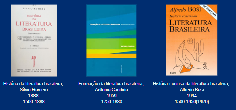

Projeto Um teto todo nosso
O objetivo do projeto Um teto todo nosso no atual estágio da pesquisa é construir uma base da dados de escritoras brasileiras dos últimos 200 anos. Para isso, a pesquisa já conta com 3 diferentes estágios:
- Levantamento de escritoras brasileiras a partir de História da literatura brasileiras canonizadas, com o foco especialmente em três das que mais tiveram/tem circulação no Brasil: História da Literatura brasileira de Silvio Romero, Formação da literatura brasileira de Antonio Candindo e História concisa da literatura brasileira de Alfredo Bosi.
